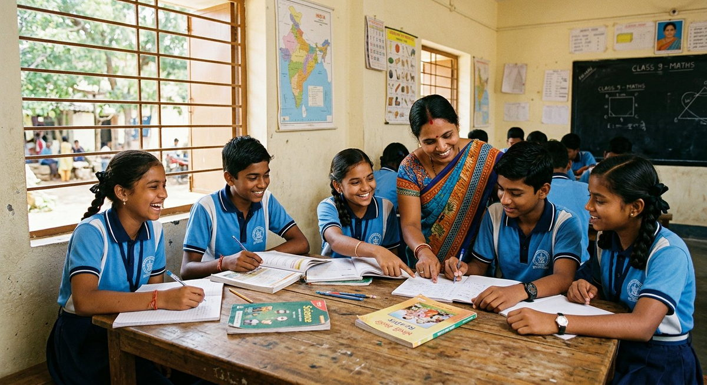

Sourcing
Why we pay 22% above the mandi — and how the maths still works
Every spice brand says 'farm-direct'. Here is our actual cost sheet: what we pay, what we save, and where the premium comes from.
Not a pink logo. It means who owns the machines, who signs the batch, who sets the shift timings — and who gets promoted.

'Women-led' is printed on more spice packets in India than you can count. It usually means a photograph of a woman on the front. I would like to describe what it means at our unit, so that you can ask the same questions of any brand that uses the phrase.
Every supervisor at ApnaPan is a woman — roasting, grinding, packing, pickle kitchen, quality. The heaviest equipment we operate, the roaster and the batch mixer, is run by women who were trained on it internally. When we bought our second packing line last year, three women from the first line designed the workflow for it, because they knew where the bottleneck actually was.
Our quality lab is run by Nasreen Taj, who has authority to stop production. Every jar carries a batch code that traces to her signature. If she rejects a lot, it is rejected — the founder does not get to overrule her. There is no version of this company where a woman's technical judgement is advisory only.
No night shifts for women, ever, even though the equipment can run overnight. Two shifts, 6am–2pm and 2pm–10pm, with 12 pick-up-and-drop routes so nobody is walking home in the dark. There is a creche room at the unit and school-holiday childcare. These are not perks bolted on; they are the reason the team is stable.
Bhavya joined the packing line in 2024 and now operates the sealing machine and is training on the mixer. Shivamma joined in 2021 and runs the roasting line. Of our eleven supervisors and above, seven are women who were promoted from within. We post every vacancy internally first, with the pay band written on the notice, and we pay the band regardless of who takes the role.
Two things. The first is that while our production team is 90% women, our field sourcing team is mostly men, because the role needs a two-wheeler and long travel in districts where women travel less freely — we are hiring and training two women into field roles this year and I will report how it goes. The second is that the ghee roast and Mangaluru lines sell more than the others, and I would like to stop pretending that our best-selling product should not also be our best-paying one. We raised the processing wage band by 8% in January, and I think we can do better still.
If a brand says women-led, ask what the women run. Not whether they are in the picture — whether they can stop the line.
Written by Lakshmi Devi R., Founder for ApnaPan. Figures quoted are from our own records and are illustrative on this demonstration site.
Every spice brand says 'farm-direct'. Here is our actual cost sheet: what we pay, what we save, and where the premium comes from.

It started with a salary advance for exam fees. Six percent of every sale has gone into the fund since 2022 — here is exactly what it pays for.

Why the chilli of one taluk in Haveri behaves differently in a pan — and how to tell a genuine Byadagi from a look-alike.